| 「このまま会社で正社員ずっと続けるのはヤだな」と感じてブログをはじめたアラサー歯科技工士男子、一年間のもがき: ブログ初心者が書いたエッセイ集 | |
| 缶ヶ江メグル | |
| (2018) | |
目次
どうも、缶ヶ江メグルです。
実は前回紹介した本『人生の9割は逃げていい』の中に、ポロッといいことが書いてあったので、それについてちょっと考えて書きたくなりました。これです↓
～～～～～～～～～～～～～～～～～～～～～～～～～～～～～～～～～～～
天才というのは1万時間、何かに時間を費やした人だと言われています。逆に言うと、何かを1万時間すればいいだけです。
『人生の9割は逃げていい』103ページ
～～～～～～～～～～～～～～～～～～～～～～～～～～～～～～～～～～～
天才。イチローとか、アインシュタインとか？いや、ここではもっとゆるく捉えて、もっと身近に探してみよう。父は暗算の天才、母は人間観察の天才、職場の主任は歯冠修復歯科技工の天才...ゴロゴロいるわ。
その定義は？本に習って、「1万時間、そのことに時間を費やした人」としよう。でも1万時間てイメージできんよね。よし、計算しよう！
目次
僕は小学生の頃からテレビゲームに親しんでいる。大学生になって以来あまりしなくなり、社会人になってまたやるようになった。
楽しいよね。問題は生産性がないことで、つまりゲームしててもお金はもらえない。悪く言うと膨大な時間の浪費というか。親とか学校の先生はゲームにいいイメージが無い。若い頃はハマってやってたけどねって言ってくれればまだいいよね。
もう、僕は高校の英語の先生が授業中にポロッと言ったゲーム批判が忘れられない。実際に何と言ったかは忘れたんだけども、「ゲームばっかりしてたらダメ人間になりますよー」的な。
カッチーン(-_-メ)
腹立つー。そこで僕は決めた。ゲームにもやる意味がきっとある。僕が見つける、と。そしてそれはズバリ次の見出しじゃないかと僕は思う。
こんにちは、缶ヶ江メグルです。ブログをはじめて一週間経ったか経たないかですけど、PV数アップを目指して頑張ろうと鼻息荒くしてます。...頑張ろうって言うけれど、頑張り方も注意しないと元気失くす一方になっちゃうからね。今日は僕がよろしくないと思う頑張り方について書きます。よかったら読んでってください(^^)
目次です
こんにちは、缶ヶ江メグルです。外はすっかり暑いです。長袖パーカー着て買い物行ったら、結構汗かいた。
人間はまだいいけど、犬とか猫とか、体中を毛で覆われている生き物には暑さはたまらんよね。うちのつんつん（ポケモンのサンダース、♀）も心配になる。麦茶あげるよ、涼むよー
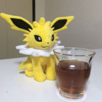
さて、つんつんに癒された所で、今日の本題いこう。
目次
僕は5年くらい前に、自分が読みたい本を読む楽しさに目覚めた。
話題の本を、僕も読んでみよっかな！でなく、
先輩とか先生とか友達とか誰かが勧めるから読もっか、でもなく、
○○について知りたいから、タイトルにその言葉が入っている本を読んでみよう。というやり方。
ちなみに目覚めた当時僕は大学生で、"大人になる"とはどういうことなのかがよくわからなくて、本を探していた。で、初めてそのやり方で読んだのがコレだったな。
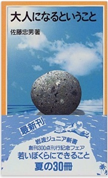
amazonよりスクリーンショット
期待していた内容はほとんど書いてなかったのを覚えている。「どんな人に対しても挨拶ができて、礼儀を失さない対応ができる、それが大人だ」 みたいなことが本のあとがきに載ってて、そこだけためになったと記憶している。
そんな感じで本を探して読むことを繰り返していると、だいたい一発で読みたい本を見つけられるようになった。そうなるとね、成功体験として刷り込まれちゃって、その他の活字を読む手段なんていらないってなるんだよね。新聞とか、ネットとか。
新聞は、とにかくデカいから苦手だ。紙面をぶわって広げて読むのが好かん。本のコンパクトさを見習えって思う。いつか本サイズの新聞が出たら、読むよ。
しかしなかなか出ないよね。産経エクスプレスはタブロイド判て言って、普通の新聞紙1ページの半分の大きさになってるけど、まだデカい。
あと、社会人たるもの新聞くらい読んで当たり前、周りの人は皆読んでるから私も読んでる的なやつ。クソだ。新聞読まなかったら働けないとでも言うのか。誰からも相手にされないのか。まぁそういう職場もあるでしょう。僕は嫌だっ！なぜあなたは新聞を読むのか、もっと明確な目的を持たないと僕は新聞読めない。購読料月4000～5000円かかるしな。
気になった所に線を引いたり、ページに折り目を付けたりできないのが残念です。ページにアクセスするのにいちいち通信が発生するのも割とストレスフル。
だが、やはり"検索"が便利だ。知りたいことをすぐ調べられる。ポケモンのタイプとか覚える技とかを調べる時、攻略本要らんくなる。ねぇ、つんつん
あ、麦茶飲んでくれてる。のど乾いてる時麦茶って最強だと思う。
そして、ブログを始めた今、僕が悩んでいたこと。他のブロガーさんの記事を読むということ。別に読まなきゃいけないわけじゃないけど、初めは読まなきゃ読まなきゃと自分を追い立てていた。でもそうすればそうするほど読みたくなくなってきて元気も無くなっていったので、もう読まなくていいと決めた。知りたいことが書いてある時だけ、検索で読むのがよい。
あと電子書籍ね。僕はkindleしか使ったことない。マーカー引いたり、ページに折り目付けたりできる。でも紙の本にはやっぱりかなわないなー。あの気になる言葉書いてあったの何ページだっけ！？って時探しにくいよね。紙の本をパラパラパラーっとめくってく感じのスピードにはかなわない。...でも読みたい本がkindleしかなかったら買うけどね。kindleも紙の本もあって、kindleの方が安かったら？それでも僕は紙の本買うね。配達に時間かかっても。いくらすぐ読めても画面をスワイプして読んでくのはなんかしんどい。ね、つんつん
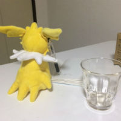
なんか書いてる。さすが僕のポケモン。
読んでくださってありがとうございます！ではまた！
昨日は深夜2時過ぎまでラボにいた。模型作りの仕事がそれまでかかったからだ。え？いつから働いてて深夜2時にって？午後2時からですね。午前9時からの社員さんもいる。僕は書き物したいので、昼から勤務という形で今のラボは働かせてもらっている。
ブログの記事は量より質、毎日ネタを探して焦って内容薄い記事を書くよりは、練りに練って何日かかけて良質な記事を作っていった方が結果近道になる、とかよく他のブロガーさんの記事で見る。でも僕的には、そういう良質な内容の濃い記事書きたい時もあるし、逆にどうでもいいような薄っぺらな記事書きたい時もある。...収益化の近道とか、信じてやり続けるほどに素直になれない。自分の気分に素直になってしまう。
「他人の人生なんて参考にならない」by 村上龍。何の本に書いてあったかは忘れてしまった。うん、歯科技工だって、ライティングだって、人との付き合い方だって、上手い人のやり方いくら コピーしようとしてもしっくり来ないもんね。最終的にはしっくりくるやり方を自分で見つけなきゃいけない。
世間で話題になっているやつ、流行りの音楽とか、期間限定のマクドメニューとか、最新ニュースとか。読まれる記事を、と思って記事の中に書いてたんだけど、あれは要らないな。"つかみ"としてよく記事の冒頭に書いたけど、ほんとのテーマはそれじゃないから、釣り記事みたいになるよね。
サイバー攻撃について意見を書きたかったりしたら、ニュースのこと冒頭に書いたらいいけど、そうじゃないなら書かない方がいいなって思った。
...本当は、北朝鮮のミサイルとか、サイバー攻撃とか、話題の音楽、食べ物とか、どうでもいいんだ。僕はただ、自分が何のために生きているのかを知りたい。
昨日高野悦子さんの『二十歳の原点』紹介文書いていて、やっぱりこういうことを考え続けたいし、書き続けたいと思った。
話を今日のテーマに。目次から。
こんにちわ。はぁー...昨日記事を書いて自分を元気づけたつもりだったのに。もう元気失くしてる。
他の人のブログをちらちらと見ていました。僕と同じぐらいか、もっと遅くに始めた人でも記事にスターがけっこう付いていたり、ページビュー数も多かったりして、とても焦った。自分は何なんだろうかと。
しかし、なんか気にしすぎじゃないかとも思える。昨日『はじめての人のための3000円投資生活』という本を読み終えた。
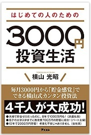
amazonよりスクリーンショット
本の通りに証券口座開いて投資してみたって記事書く予定ですが、今日は書かない。本の中のこの文章が印象に残った。
～～～～～～～～～～～～～～～～～～～～～～～～～～～～～～～～～～～
価格の上がり下がりに一喜一憂したり、検証が不十分なまま、いろいろ商品や投資方法に手を出したりすると、失敗することが多い。投資には、腰を据えてじっくり取り組むこと。 （141ページ）
～～～～～～～～～～～～～～～～～～～～～～～～～～～～～～～～～～～
これは、投資に限らないと思った。ブログでも一緒なのではと。
PV数の上がり下がりに一喜一憂したり、検証が不十分なまま、いろいろなジャンルの記事やアフィリエイト広告に手を出したりすると、失敗することが多い。ブログには、腰を据えてじっくり取り組むこと。
ほら、いけるよね。男女のお付き合いにも当てはまるんじゃないか。
相手の瞬間瞬間の気分の上がり下がりに一喜一憂したり、（相手に嫌われているかどうか、また自分は相手への興味を失っているのかどうかなどの）検証が不十分なまま、いろいろな友人、知り合いに相談したり、別の異性に手を出したりすると、失敗することが多い。お付き合いには、腰を据えてじっくり取り組むこと。
ほらほら！いけるじゃーん^^
いかん、お遊びはここまでにして。
他のブロガーさんを目の敵みたいにするのは精神衛生上よくない。よくないけどついしてしまう。どうしたら、この人たちは自分と同じブログ仲間だと思えるのか、考えてみる。
そもそも、自分は出来が悪い、出遅れているとか思うからよろしくないんだ。はてなブログの狭いグループの中ばかり見ているから。一旦、もっと広く、世界を見よう。
ということで国連の公式サイト（http://www.un.org/en/index.html）に行って、世界の人口を調べてみた。まず総務省統計局のページ。ホーム>統計データ>世界の統計>本書の内容>主要出典資料名一覧 ときて、「国際連合及びその関連機関の資料」という項目の一番下、"World Population Prospects"をクリック。
で、国連のページに飛んで、What's newの欄の"World Population Prospects: 2015 Revision"をクリック
ナビゲーション（メニュー）バーのData →Download Center をクリック
ページ下の方の表、一番上、"Total Population-Both Sexes"をクリック、ダウンロード。そしたらエクセルファイルがダウンロードできます。それによると、国連の最新の調査は2015年7月1日に行われており、世界人口は約7,34,9472,000人。約73億人ですね。
データダウンロードページ http://esa.un.org/unpd/wpp/Download/standard/Population/
それで、その内ブログをしているのは何人？総務省情報通信政策研究所という所が2009年に、『ブログの実態に関する調査研究 ～ブログコンテンツ量の推計とブログの開設要因等の分析～』（http:/www.soumu.go.jp/iicp/chousakenkyu/data/research/survey/telecom/2009/2009-02.pdf）
という調査書を出している。今から8年前といささか古いが、他に新しいデータを見つけられなかったのでこれでいく。この調査書によると、
～～～～～～～～～～～～～～～～～～～～～～～～～～～～～～～～～～～
米国Technorati社の調査によると、2007年3月時点で同社が追跡するブログ数は、世界全体で7000万以上(図表1-3-3）、日本語による記事は全体の37%と、英語（36%）を超えて世界一位の発信量と報告されている （7ページ）
～～～～～～～～～～～～～～～～～～～～～～～～～～～～～～～～～～～
だって。7000万以上。1つのブログにつき一人が運営しているとすると、7000万人以上。もう8年前だし、今は1億人くらいいたりして。わかりやすくするために現在世界のブロガーは1億人としよう。
世界人口73億人中、1億人。全然少ないじゃないか。日本語による記事が世界全体の中で一番という所が気になるが。「全体の37%」は現在も一緒としたら、日本のブロガーは3700万人。なんだ、73億人中、日本語でブログをやっている人はたかだか3700万人。けっこう実際の数とはかけ離れているでしょうが。妄想の域でしょうが。
国でいうと、どこが近いのかな。日本の人口は1億何千万人とかいうし。再び国連の2015年の人口データに戻って、近い国を探してみると...
Bosnia and Herzegovina 3810（千人）
とあった。ボスニア・ヘルツェゴビナ。どこだ。google地図！......ヨーロッパ、イタリアとギリシャの間くらいにある。この国の1国民、くらいに思って毎日ブログ更新するのが気楽でいい。続けられそう。...そう？
だめだ。今日は書けない。最後まで読んでいただきありがとうございます。また。
記事書いてましたが、間に合わん。記事書く以外にもやりたいことを今日はしていました。
自分のブログページのデザインの変更とか、googleアナリティクスの利用開始...それだけなんだけど、とにかくやり方がわからないのでいちいち立ち止まる。
毎日記事更新というルールだと書ける記事が限られてくる。その種類の中で記事を量産したい時は向いてると思う。でも今までと違う記事の書き方したい時とかは、毎日ルールじゃなくてもいいか、てかそうじゃないとできん。時間がとてもかかる。
今書きたい記事が、時間のかかるやつなので、しばらく隔日更新にします。
ちょっと前の記事で毎日更新が自分には向いている、とか書いてたくせに。僕は意志が弱い。逆に言えば柔軟な考え方ができる。都合よすぎか。
とにかくもう決めた！ではまた！
どうもー(・ω・)ノ あの、記事書くときって、自分の中で何かルールありますか？缶ヶ江メグルは1記事だいたい2000字程度書くって決めています。
これは、ブログを始める前に クラウドワークス というサイトでライターを試みて、あるクライアントの指示に「2000字以上」とあったから。そのクライアントの仕事は僕全然できなくて、途中契約解除しました。先方にめっちゃ迷惑かけた。
書くことにおいて、僕は人から頼まれてやる仕事は無理だと思いました。自分の書きたいように書かせて欲しい。その我が強すぎる。
話を戻して、缶ヶ江メグルは1記事2000字ルールを採用していますが、僕がはてブログを始めるきっかけになった本『アフィリエイトがまるごとわかる本2017』では、1記事1000字以上と書いてある。
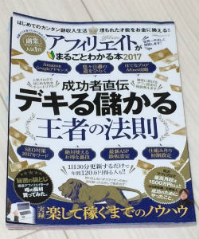
さらに、他のブロガーさんの記事を見ていると、1000字より少ないのもある。なんか、あんまり文字数にこだわらなくていいのかと思った。それと、文字数多めに設定すると、たくさん本の内容を紹介しちゃう。紹介しすぎてしまう。記事読んでくれた人が、もとの本読まなくていいやってなるとしたら、これはよろしくない。営業妨害になる恐れがある。書評ってこの辺難しいなと思った。気を付けて書きます。具体的にどうやったらっていうのはまだよくわからないけど。とりあえず文字数は1000～2000字がちょうどいいんじゃないかと思った。
でねでね、おととい金曜日にラジオ、FM802を聴いてて、ちょうどDJさんがおんなじ話してたんだ。
5/19（金）14時台 Chao! MUSICA（チャオ！ムジカ）のDJ野村雅夫、ゲストに河瀬直美監督を招いて、5/27（土）公開の映画『光』についてトークするという内容でして。
僕のうろ覚えで書いてもいいんだけど、それだと情報の抜け落ちがひどくなる気がした。なので今回は、スマホアプリradikoのタイムフリー機能を使って、該当するトーク部分を文字起こししてみました。知ってる？radikoのタイムフリー機能。一週間前までの番組を、無料で、何回でも聴ける、とっても便利な機能なのさ！
はい、それで起こしたのがこちら。
～～～～～～～～～～～～～～～～～～～～～～～～～～～～～～～～～～～
野村 ...僕ね、ラジオの仕事してるでしょ？ラジオは映像がないわけじゃないですか。それこそ僕映画の話とかして、時折シーンについて、言葉で描写することがあるわけですよ。そん時とかにリスナーが何考えるだろうって想像してしゃべるけど、どこまでそれ伝わってんのかなとか、すごい考えたし、
河瀬 あれだよね、その、説明しすぎると、
野村 そう。時に怒られますからね。「もうー見た気になってしもたわー」って
２人とも (笑)
野村 ほんますんません、みたいなこともあるし...
～～～～～～～～～～～～～～～～～～～～～～～～～～～～～～～～～～～
野村さん、いやマチャオさん（よくこの愛称でリスナーさんや他のDJさんから呼ばれている。僕も言えてよかった。ありがとうございます）は毎週金曜の15時台「109シネマズ FRIDAY NEW CINEMA CLUB」というコーナーで、3分映画短評をしているんです。そのことかな、説明しすぎるというのは。
うん、わかる。マチャオさんのしゃべり描写わかりやすいからなー。
で、この話を聴いて、自分もブログでもしかしたら本の内容紹介しすぎてないかな、と思ったわけであります。自分の中で引っかかった所に絞って書くようにすれば大丈夫かな。
今日はこの辺で。最後に、野村雅夫さん、ラジオで声だけ聴いていると、ナチュラルな関西弁から日本人のお顔をイメージしてしまうのですが...
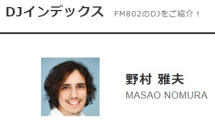
FM802ホームページよりスクリーンショット
URL https://funky802.com/service/Dj/index/49
え。 雅夫って名前からは全くイメージできなかった。
googleで検索したら、同じようなこと書いている人が結構いる。でも僕も書く！だってびっくりしたし！イタリアと日本のハーフらしいです。
今度こそ、この辺で。最後まで読んで頂きありがとうございます！ではまた！
目次
今月のFM802邦楽ヘビーローテーション、Nulbarich（ナルバリッチ）の「It's Who We Are」がかっこいい。出だしの（イントロの、というのか）ギターの部分がかっこいい。まずはYoutube/ Nulbarich 公式チャンネルより、聴いてみてください↓
https://youtu.be/4bn7QIf50RM
ど、どうすか？かっこよくないすか？5月中はヘビーローテーションだから、FM802をつけていればしょっちゅう聴ける。うちの職場は802がずっと流れてるので、もう何十回と聴いてる。
せっかく紹介するので、イントロのギターを文字に起こしてみた。Youtubeの動画を何回も再生しつつ、耳コピ（？）で再現。
ジャ ジャ ジャジャッジャン ジャ ジャ ジャジャッジャン ジャージャジャジャ
ジャ ジャ ジャジャッジャン ジャ ジャ ジャジャッジャン ジャージャ ジャジャジャ
フッ(笑) 結構時間かかってやったのに、これじゃ全然わかんない...orz
いいや、気を取り直して、サビの一部分を除き、曲の中でずーっとこのギターのリズムが流れているんだ。クセになるよ。ラジオ聴いててこのイントロが流れたら、キタッ、とちょっとテンション上がる。
せっかく紹介するので、イントロギターを今度は声で真似してみました。iphoneのボイスメモで自分の声を録音して、メールでPCに送って、Windows Live ムービーメーカーで動画ファイルにして、Youtubeにアップロード。無駄に手間がかかる... 10秒もないのでよかったら再生してみてください↓
https://youtu.be/fpreFFJXu3A
息吸い込む音までクリアに録音しなくていいのになと思う。ご視聴ありがとうございます。かっこいいなあ、このギター音。
ダメだ、昨日からまた書く元気が無くなってきている。毎日やってると、嫌になる時絶対来る。きっとくるーきっとくるー
もっといいものを書くために、本を読もうってなる。染谷昌利さんの『ブログ飯』をkindle版で読んでいるよ。
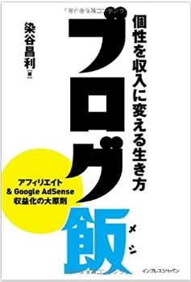
amazonよりスクリーンショット
うん、ためになる。そこで書きゃいいのに、僕は次にA8.net（アフィリエイト広告提供サイト）の「A8キャンパス」へ飛んで、サイト運営の基本とか、先輩サイトの見学とかをして勉強した。勉強という名の逃避。書くことからの逃避。
インプットを増やすと頭の中でいろいろな考えが巡る。考え、巡る......缶ヶ江メグル......やあ、ボクの名前は缶ヶ江メグル。13才の中学2年生。
コトバつかいさんが考え過ぎてフリーズしてしまった時に、非常勤ライターとしてこのブログの記事執筆を任されているのさ。中2だけど、さっき（2行前）生まれたばかりなのさ。何故かって、コトバつかいさんが人生をやり直すなら、中2くらいからと考えたからさ。ボクはコトバつかいさんの考えから生まれる。
好きに書いていいんだってー。どうしよっかな、ぷっぷっぷー☆ぐんまけん、ぐんまけん。那須高原。それはとちぎけん。
いいもの書けるようになりたかったら、書くしかないよねー。本読んでばかりじゃ書けまへん。書け書け！しかし書きたいと思ったことが、すごく時間かかりそうでどこから手を付けたらいいのかわかんない。コトバつかいさんは今それでフリーズしているらしい。
ねぇ、どう思う？あっごめんね、今ブンショー・カーケイさんに意見を聞いてたんだ。カーケイさんは30才のブロガーさん。ブログでお金稼いでいて、今、月30万くらい収入あるみたい。結婚していて、ワイフは2つ年下のエカーキ・グラッドさん。絵を描くのが好きで、笑顔が素敵な奥様ですよ。このお二人もコトバつかいさんの妄想から生まれた。こうありたいという妄想。
えっ写真？あるよー。カーケイさん↓
筋トレが趣味なんだ。胸筋美しいなあ、メグルはほっそいから憧れる。んで、次グラッドさん。
なんか厚着してるね。お店の冷房ガンガン効いてるんかな。いつも優しい笑顔で "Hi,Megu" って声かけてくれる。
話戻そう。カーケイさん、書けない時はどうしたらいいと思いますか？
"Написать"
「書け」だって。カーケイさん、ロシア語のミステリアスな雰囲気に憧れてて、今わざわざ翻訳サイトでロシア語に翻訳してたよ。ここで翻訳したんだって→ エキサイト翻訳 http://www.excite.co.jp/world/russian/
"Спасибо"
メグルもお返し。「ありがとう」のロシア語で、スパシーバという。スパシーバ。メグルがロシア語で唯一知っているコトバ。ラジオFM802のBEAT EXPO という番組の水曜エキスポ映画部のコーナーで、『不思議惑星キン・ザ・ザ』というロシアのSF映画を紹介してて、あまりに気になったのでアマゾンで買ったのさ。
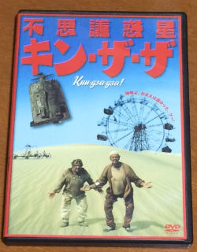
1万円くらいしたし。めちゃシュールな映画だった。クー!（惑星プリュクの現地語で、この場合「サイコー！」の意）
へい、とりとめもなく書いてきたけど、意味のないことも意味があるんよ。コトバつかいさんが最近レビューを書いてた、又吉直樹著『劇場』にも、いいことが書いてあるよ。メグルが紹介しよう。シヨーウ。
～～～～～～～～～～～～～～～～～～～～～～～～～～～～～～～～～～～
どこかで犬が吠えている。この犬の鳴き声には何の意味もないけれど演劇において意味のない犬の鳴き声というものは存在しない。犬が鳴くからには、そこになにかしらの根拠が必要になる。意味のない遠吠えは、意味がないという効果を生み出している。ということは、今現実に聞いている犬の遠吠えは演劇を経由することによって僕にとっても意味を持ってしまっている。 （196ページ）
～～～～～～～～～～～～～～～～～～～～～～～～～～～～～～～～～～～
好きだなぁ～この文章。ね、カーケイさん。又吉さんすごいよ。いい本買ったね。
という訳で、このメグルの文章も意味がないという意味を持っている。これを書くことによりコトバつかいさんの脳内がスッキリして、また記事を書けるようになるだろう。ダローウ。
あ、そうそう、ブログランキングに登録しました↓
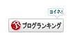
ヨイネ！ホイサ！ドヤサ！...SYSTEMがよくわかんないんだけど、誰かがこのリンクをくりっくしてくれたらランキングポイントがたまって、ランクも上がっていくの？まいいや。
ではではこの辺で、わたくし缶ヶ江メグルはおいとましますぞ。読んでくれてありがとーう。bye.
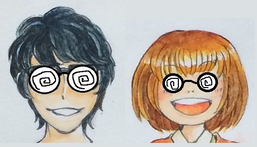
「やあ、ボクは研究員メグル。今日はポケモンの新種について研究をしたいと思います」
「メグルくん、何このメガネ。研究員？」
「フクちゃんっ、今日は君は研究員フクだよ、うずまきメガネ付けたら研究員っぽくなるかなと思ったんだ」
「そっか、そういうことか。で、メグルくん、新種のポケモンを発見したの？」
「フクちゃん飲みこみ早い、助かる。そう、そうなんです。ポケモンフュージョンという、ポケモン初代の151匹の中から2匹をミックスして合成獣(キメラ)を作れるサイトがあってね、そこで見つけた気になるのをいくつか紹介しようと思ってね」
～・～・～・～・～・～・～・～・～・～・～・～・～・～・～・
ポケモンフュージョン ja.pokemon.alexonsager.net
～・～・～・～・～・～・～・～・～・～・～・～・～・～・～・
「なるほど、私たちの研究成果を発表するのね。このサイトは暇つぶしにもってこいなので、待ち時間とかにおススメだよね」
「うん。おススメ。ポケモンやったことある人じゃないと楽しめないのが欠点だけど。じゃあ早速だけど、いくよ」
「おー」
目次
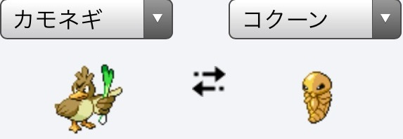
「まずはこの2匹を、フュージョン！」
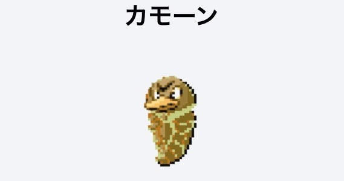
「カモーン(笑)」
「私達のお気に入りのやつやね(笑)」
「そう。多分、技は かたくなる つつく しかできない。まだサナギだから。」
「リアルだね、メグルくん(笑) たしかに、見た目からはそうだ」
「トキワの森にまれに出現。したりして。そしてフクちゃん、カモーンの進化系と思われるポケモンが見つかったよ」
「えっなに？」
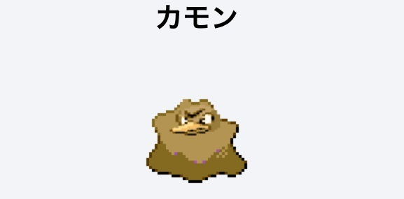
「カモン。カモネギ×メタモン。」
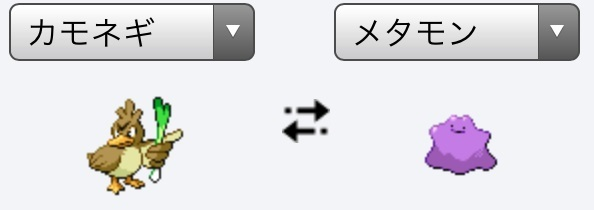
「落ち着きが出てきたね。カモーンって誘ってたのに、カモンの一言に」
「うん。サナギから成虫になったんだね。見て見なよ、あの出で立ち。両手両足を広げて、向かってくるものなんでも受け止めてくれそうな感じ。ゴールキーパーっぽい。」
「ほんとだほんとだ。ポケモンサッカーがあったら、この子はキーパーだね。で、どんな技が使えるの？」
「おそらく、たくわえる のみこむ はきだす とうせんぼう だと思う。カモーンがレベル30で進化。するかも。てかメタモンを誤変換したらすごい字になったよ。『女多門』」
「どんな門なんだ(笑) そろそろ次いこうよ」
「うん」
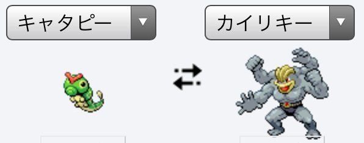
「次はこの2匹を～、フュージョンッ！」
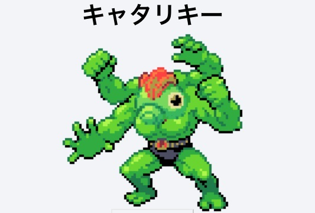
「おおぉー...気持ち悪い。強そう...」
「これもお気に入りだよね。むし かくとう タイプだねきっと」
「そうだね。キャタリキーはどうやって戦うの？」
「まず、口から いとをはく 攻撃で敵の動きを封じる。そこにすかさず近づいて行って、じごくぐるま。」
「むし かくとうのコンビネーションだね。ちなみにキャタリキーの進化前は？」
「もちろん、」
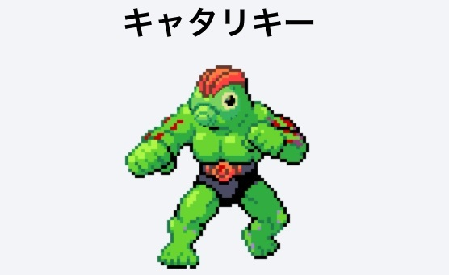
「キャタリキーだよ(笑)」
「ぶふっ(笑) 名前同じなんだ。これも十分強そう。ちなみにちなみに、これの進化前は？」
「それももちろん、」
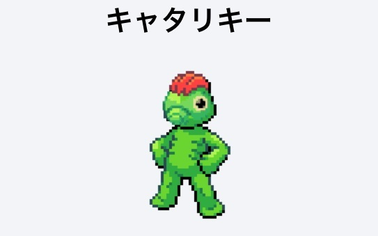
「キャタリキーさ」
「(笑) やっぱり進化前は弱そうだね、幼いというか。でも戦い方は一緒なのかな？」
「うん、そうだね。まず いとをはく で敵の動きを封じ、そこにすかさず近づいて からてチョップ。」
「じごくぐるま よりかわいいね。でも戦い方がワンパターンだね。いとをはく かわされたらできないじゃん」
「そこがキャタリキーの弱点。この子もトキワの森に、ごくまれに出現。するかもしれない。次、いっていい？」
「いいともー」
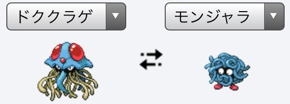
「最後は、この2匹を、フューッジョン！」
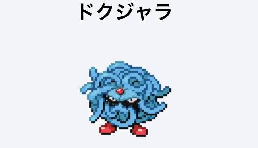
「悪そう。でもかっこいい。ドククラゲもモンジャラもメグルくんの好きなポケモンだね」
「うん。みず くさ タイプかなこの子は」
「フュージョン以外でドクジャラにする方法はないの？」
「あるよ。それはね、モンジャラにポケリフレでポケマメをあげようとして途中で落とす行動を30回すると、ドクジャラになるよ。この場合は どく くさ タイプ。」
「かわいそうっ...！ トレーナーを信じられなくなってすねちゃうのか。あの目は憎悪の目だ」
「うん、だからどうしても どく くさ タイプのドクジャラが欲しい時以外は、フュージョンでするのがいいね」
「いやぁ、発表したね」
「そうだね、おもしろかったね」
「ただ作るんじゃなくて、作った子の技とか進化方法とか考えるとおもしろいよね」
「ほんとにね。この記事を読んでくれた人も、気が向いたらやってみてくださいね」
「フクちゃん、ナイス締め」
目次
夕方。電話が鳴って出たら、取引先の歯医者の受付の女性だった。
「金曜日に電話で、患者の模型取りに来てほしいと言ったのに、まだ来てない。いつ取りに来てくれるのか。」
なんか口調が怒っている。確認すると、受注メモにはその歯科医院の名前ない。こちらの伝達ミスっぽい。「申し訳ありません」と謝罪し、明日取りに行きますと伝え、電話を切る。
なんなんだろうか。確認のため30秒くらい保留にしたが、その後の電話も向こうは待たされたことが不服そうな感じだった。機嫌の悪い感じ。
一番最初に僕が感じたのは、自分のせいではないのに怒られ、謝らなければいけないことへの怒り。でも電話ではもちろんあらわにしない。会社の人にもグチらなかった。偉いでしょ？ウソ、そんな自慢をしたいわけじゃない。会社にいる間は、自分は会社の歯車の一つだ。没個性なのだ。会社への怒りを受け止めて、謝罪しなければならない。たとえ自分のミスじゃなくても。
ここからは僕のターン。怒り発動。
目次
3日後に、父の日が迫っている。乳の...いやなんでもないです。父の日が。まだ何を贈るか決めていない。
何も贈らないという手もある。しかしそれでは寂しい。
手紙はお金がかからず、喜ばれやすい。しかし、こっ恥ずかしい。
やはりモノ、使ってもらえるモノを贈って喜んでもらえるのが一番いい。
して、何を贈るか。
節約。それはお金稼ぎだ。働いてお金稼ぐのとそんなに変わらない。なんでそう思うのか、今から書いていきますね。
今回ターゲットにした食費は、節約すると稼いでる感がする。それは毎日買うものだからだね。例えば平日昼ごはんに500円使ってたのを、400円に抑えたとしたら、1日100円浮くよね。これは、あなたが1日100円稼いだと言える。 週5日働いてたら1ヶ月で20日だから、このお昼代100円節約を毎日やって1ヶ月続けたら、100円×20日=2000円だぜ？なかなかよろしくないですか？毎日続けるというレバレッジは、でかい。
こんな感じで、ちょっとした節約アイデアをいくつか思いついてボクはやっているので、紹介しますー。
目次
ケース① 毎朝 自販機で買う缶コーヒー → インスタントコーヒーにする
ケース② 晩ごはんのおかず スーパーのお惣菜 → 冷凍食品にする
ケース③ お茶 2Lペットボトル → お湯で沸かして作るお茶パックにする
ケース④ 米 ごはんパック → 炊飯器で1週間分を炊き、小分け、冷凍保存にする
つまらん。なんでブログ書いててこんなつまんないんだろう。なんでこんなつまんない気持ちでブログ書いてるんだろう。昨日はけっこうノッてたのに。誰かのため、とか考えてるからつまんないのかな。自己満足記事で終わんないように、自己満足記事にならないようにとか考えてるからつまんないのかな。...何がんばってんの。絶対にがんばらないって決めたじゃん。てか書いた記事に自己が満足しないってダメじゃん。そんなの誰が満足するんだよ。最低ライン、自己満足記事じゃないか？だいたいだーれも面白がらない記事、書いた本人しか面白くない記事？そっちを書く方が難しくないか。逆にすごいよ。ユーモアの感性が真に独特というか。誰ともかぶらない興味・笑いのポイント。
がんばりだすとつまらなくなる。だってがんばってる人の意識は目の前から離れていっているんだもの。集中してないんだもの。そうでしょ？がんばるって、ニュアンス的に 我慢して とか 歯を食いしばって とかいう意味・気持ち込もってるでしょ。セ○クスがんばる？いやそーゆう人もいると思うけど、僕はがんばらないよ特に。ただしたいからするんだよ。「私は昨晩妻とがんばってセ○クスしました」とか変じゃん。"がんばって" が余計じゃん。仕事かよ。むしろ しました → 3回もしてしまいました、早朝から仕事なのに くらいでもいいじゃん。...あぁ、ゴメン。僕はセ○クス好きなんだ。そういう類の人なんだ。「セ○クス」を適当に自分の好きなことに置き換えて読んでおくれ。
だからさ、「がんばりますっ」とかいう言葉は聞きたくない。使いたくない。言いたくない。だってどんな言い方したって、魂感じないだろ？またセ○クスの話していい？
「俺めっちゃがんばって○○ちゃんのこと気持ちよくしてあげるよ」 えー♡そんな...って一瞬思う。けど、なに、めっちゃがんばんないとできないの？がんばんなかったらどうなんの？私気持ちよくなれないの？ ってなるくない？冷めない？フツーに何も言わずに気持ちよくしてくれる方がよくない？で、たまに「気持ちいい？」とかニヤニヤされながら訊かれる方がよっぽどよくない？魂感じるだろ？...何の話だこれは。
だからさ、わざわざ「がんばる」って言う奴、もしくは自分が言う時。お金稼ぐためとか色々理由はあると思うけど、危険サインかもしんないよ。なにしろ本当の自分を抑えてる状態だから。
というわけで今日の僕は危険状態だったかもしれない。知らぬ間に「これを書いた方が検索流入狙えるだろう（そんなに書く気ないけど）」とか考えて書き始めてる。カッコん中の本心に気付かずに。今気付けて良かった。ブログ、つまんないのに続けることないよな。誰に言われてやり始めたんだよ。自分で始めたんだろうが。何か書きたかったから始めたんだろうが。検索流入とか、ブクマ狙いとか、なんかそういうの気にする前に何を書きたかったのか気にしろよ。何を書きたいのか気にしろよ。んで書けよ。
明日死ぬとしたらどうすんだよ。彼女とセ○クスがしたいよ。死ぬ前に中に出したいよ。それをせずに死ぬなんて死んでも嫌だよ。...おい、書きたいことはねぇのかよ！ねぇ！！！セ○クスが終わってから書くよ。多分こんなことを書くだろう↓
死ぬ間際になって、中に出したいと切に思うのは、生物の生存本能から来るのだろうか。子孫は残さねば何としても...！的な。そんな風には考えたり思ったりしなかったんだけどな。本能って考えたり思ったりすることじゃないのかな。いやしかし、男に、オスに生まれたからには夢じゃないか、中に出すの。子どもが作れるんだぜ、すごいぜ？いや、違うな。子どもが作れるから、ていうのは中に出したい衝動の説明になってないな。誰かとつながりたいという気持ちの究極の形、強烈につながりたいと求めることが、中に出すこと、つまり遺伝的につながること（子どもを作ること）...。衝動の正体は "つながりたい" なのかもしれない。なんでつながりたいのかな。子孫を残したら種として生き残れるからかな。そもそも遺伝子レベルでは理性とか意識なんてものはないしな。遺伝子の入れモノ（僕とか）が古くなってきたら、若くて新しい入れモノ（子ども）にお引っ越ししないとね。生物なんてたったそれだけのことを延々と繰り返してるだけだよね。ただ、僕の遺伝子が僕の子どもに引き継がれて生き続けるとして、でも僕は死んでいくわけで、まだ考えたり感じたりすることができるわけで。セ○クスが終わった後は何をしたいと思うんだろうね。子育て？そりゃそうだろうけど。他は？わからない。僕の場合やっぱり読んで考えて書くことなのかなー。何を読んで、何を考えて、何を書くのかな。わからん。
読みたいのを読もう。考えたいことを考えよう。書きたいことを書こう。実名も顔出しもしてないのに、なぜこんな萎縮してるんだ。あれだな、結局、リアルで思うように動けてない人は、バーチャルリアルでも思うように動けないんだ。バーチャルだろうが、そこもリアルなんだ。
うん、つまんなさ消えたな。よかった。
2017年4月から、正社員 → アルバイトにさせてもらってもうすぐ3ヶ月。物書きになりたい。その思いを現実にするべくやってきた。
はじめの1ヶ月は、webライターとしてやっていこうと思い（前々からそれこそ僕の物書き生活を実現できるカタチだ！と強く思っていた）、クラウドワークス（クラウドソーシングのサイトの1つ）に登録した。
ボクが初心者にも関わらず契約してくださったクライアントからマニュアルや指示をもらって、1日1記事目標で書いていた。
でも、記事のお題についてネットで調べるのに2日かかってしまう。それで、書くのにもう2日。4日くらいかけてようやく1記事ができる。先方も「そろそろ記事納品していただけると助かります」メッセージしてくる。ムリ。ムリムリ。仕事は10記事単位で来るのだが、締切3日前くらいの時点で4記事目の執筆中...
――間に合わない。このペースだとあと1ヶ月は欲しい、しかしそんな大きな納期延長受け入れてもらえるのか、いやでもこれ以上早くできない――
ということで、1ヶ月延長を申し出た。先方は、それはムリだ、と。待てて10日だと。10日で仕上げるか、契約途中解除するか選んでくださいと言われ、10日ではムリなのでボクは契約途中解除にした。
途中解除でも契約が終わると、契約相手を評価することになっている。コミュニケーション、クオリティ、スキル、納期、とか5つくらいの項目があって、☆1～5（多い方がよい）でつけて評価する。こっちが仕事できなくて辞めさしてもらったんだから、向こうに不備はない。よってこちらは全ての項目に☆5をつけ、コメント欄に
途中解除して申し訳あ
りませんでした。短い間でしたがお世話になりました。そしてご迷惑をお掛けしました。私が初心者にも関わらず契約してくださり、記事1つ1つに修正のアドバイスを的確にくださいました。記事の完成が遅くても辛抱強く待っていただきました。ここで書かせていただいた経験を次に活かしていきます。ありがとうございました。
とか感謝と謝意の気持ちを込めて書いとくのがベストアンサーだったろう。その通りで間違いないんだけど、なんか書いてて気持ち悪い。ボクはライティング・アンドロイドか。...しかし、ボクはそうしなかった。
納期の項目を☆2にした。素直に納期は早かったと感じたので、そこは嘘をつかずに評価しようと思った。決して向こうを悪く言おうとか、そういう意図ではなく（もしそうなら☆1にしてる）。で、他の項目は全て☆5。コメントは残さなかった。その前にメッセージのやり取りで感謝と謝意は述べていたし、いいかと思った。その時は挫折感でぐったりしていた。
すると
先方から怒りの一撃が
僕の評価を全て☆1にし、コメント欄に
「十分に余裕をもった納期設定なのに、納期ギリギリになって1ヶ月の期限延長なんてありえません。その上こちらに低評価をつけるとは何をお考えですか。自分が何をしているのか、もう一度よくお考えください」
的なことが書かれていた。
怒らせてしまった。自分のしたことは非常識なことだったんだとわかった。申し訳ない。ただ思うのは、そんなに悪い記事書いてないのに、クオリティとかも☆1かよ。まぁ、この☆1はクオリティに関することじゃないのはわかる。しょうがない。1ヶ月の納期延長を申し出た時もそうだったけど、向こうは「余裕をもった納期設定をしているのに」を繰り返していた。...根拠はどこにあるんだ。...カリカリしてもしょうがない。ボクが飛び抜けて遅いんだろうな。
この時ちょうど4月末。クラウドワークスで一人のクライアントから仕事を受け、途中で辞めてわかったこと。それは人に頼まれて書くのは嫌だ ということ。納期が苦手だ。せっかく面白いこと書いてもリライトされてはしょられるし。 ♪消して―！リライトしてー！！ アジカンの「リライト」は好きだけど、この時のリライトはムッときた。こっちが先方のサイトに沿った書き方できてないからリライトされたんだけどね。悪いのはボクなんだけどね。でもムッとするよね。わかる？
歯科技工士の正社員の時に感じたのと同じだけど、自分の上に指導役の人がいるのが嫌だ。 よくメンターがいるのといないのとでは、スキルの伸びに大きな差が出ると言うが。知るか。上下関係というのは嫌だ。自分が下だとペコペコしなきゃいけないし、言いたいこと言えないし。言うとボッコボコにされるし。自分が上だと下の人にペコペコされるのが気持ち悪いし。上も下も嫌っていうね。
さて、どうしようかと。
ちょっと前からアフィリエイトというものが気になっていた。以前『マンガでわかるアフィリエイト』という本を買って読んでみたが、ほんのりふんわりこんな感じっ っていうのはわかった。
それ以上はわからなかったので、今回はもっと具体的なものをと思い、『アフィリエイトがまるごとわかる本2017』という本を買った。それを読んで初めてわかった。
アフィリエイトというのは、ブログ（or サイト）を立ち上げ、記事を書き、見に来てくれた人が記事で紹介してある商品を買ってくれて報酬をもらえる仕組みだということを。
クラウドソーシングのライティングの仕事がなんでこんないっぱいあるのかもわかった。クラウドワークスとかランサーズとか、あるやん？こういうサイトでライティングの仕事の依頼をしている人たちは、みんな、アフィリエイトサイトを持っている人たちだ。サイトを組織で運営してたり、ライティング以外の作業に専念するため、自分のサイトの記事ライティングしてくれる人を探しているんだ。ボクがクラウドワークスで契約したクライアントも、今思い返すとそうだ。
自分ではじめれば、上にも下にも人はつかない。初心者でもブログならやりやすいと本に書いてあったし、ブログを始めよう！それで今まで続いているのがこのブログ。でもまだ全然収益がない。ブログはじめて2ヶ月か。ボクと同時期くらいにはじめた他のブロガーさんのブログ見ていると、どうもボクはネット露出が少なすぎるっぽい。自分の殻にこもって何か書いてる人みたいな。それでもTwitterには記事更新を毎回ツイートするようになって、少しずつ見てくれる人が増えてきている。とても嬉しい^^ 毎日20～40PVの間をうろうろしているけど、徐々に増えてきている。ほんとに徐々に。ジョジョ...やめとこ。毎日34PV以上キープすれば、月に1000PV超えることになる。それを目標にまずやっていこう。達成できたらはてなブログ有料プランに変更して独自ドメイン取得して、グーグルアドセンスに申し込む。
まあブログはそんな感じで続けていくのでいいんだけど、今ちょっとブログよりも大事な案件が。結婚だ。去年ボクは、彼女に指輪・手紙・バラと共にプロポーズしたのだ。「来年中に結婚する」という約束をして。約束？目標？とにかくそういう心づもりでいるということだ。彼女に渡した手紙の中に「4月から3ヶ月はもの書きの仕事に集中させてほしい」と書いた。彼女はそれを認めてくれた。そしてもう、あと1週間くらいで3ヶ月が経とうとしている。
今僕がやることは、彼女との約束を守ることだ（その先にはオスとしての悲願、中に出すという夢がある）。そのために、今の会社（歯科技工所。ラボ）でアルバイトでいいのでこれだけは給料欲しいという額がわかった。17～18万。それくらいあれば、生活費と毎月1～2万の貯金ができる。今16時出勤で0時くらいあがり（1日8h）だけど、時給900円でこれでは1ヶ月20日働いて、月収14万4千円で足りない。18万円に到達するためには、14時出勤で0時あがりの1日10h、20日勤務にする必要がある。今日仕事に行った時に社長に相談する。7月からそうさしてもらえるように。
てか、18万ていったら正社員の時の給料だよ（9時出勤 0時あがりの1日15h勤務。ヘンな感じだ）。そこから健康保険と厚生年金と所得税と雇用保険が引かれて、手取り15～16万だった。それに戻す。アルバイトで。自分の好きなことを続けつつ、結婚を実現する第一歩はそこからだっ！
こんな長い文読んでくれてありがとうございます。
補足
正直、書いたり本読んだりする時間が多く取れる、今の16時出勤の状況は悪くない。でも毎月貯金を崩さなければやっていけない。そこがでかい。いつかこの生活はできなくなると思うと、書くのも読むのも考えるのも集中できなくなる。好きなことするんだったら、生活の基盤があるのが大事だと感じた。そのために好きなことする時間減ってもいい。はい、補足でした。
目次
考え出したらキリがない。不老不死、舞空術、透明人間 etc... 週刊はてなブログ、今週のお題「もしも魔法が使えたら」ですね。キリがないなー。ボクは何したいのかなー。とボンヤリ考えてた。
目次
シャワー浴びてる時に地震来たらどうすんだ？と考えたことがあって
また、ブログタイトルを変えた。これで3回目だ。
コトバつかいの日記 → コトバつかいの充電スタンド（ワイヤレス） → 缶ヶ江メグルの小説風日記 → 缶ヶ江岬のメグル灯台
タイトル変えてしばらくは、いい感じな気してる。でもそのうち違うなって感じてくる。
しばらく と そのうち ってどのくらいの時間の長さなのか。今はそこはどうでもいい。タイトルがすぐに死ぬ。すぐに死なせてしまう。タイトルもまともに飼えないで、ブログなんて飼えるわけないでしょ！ダメです。諦めなさい。...ロッテンマイヤーさん、そんなこと言わないで。今度はちゃんとどんな記事書いても死ななそうな万能っぽいタイトルにしたから。
皆さん、あまりブログのタイトル変えないですよね。ボクにはとてもできない。
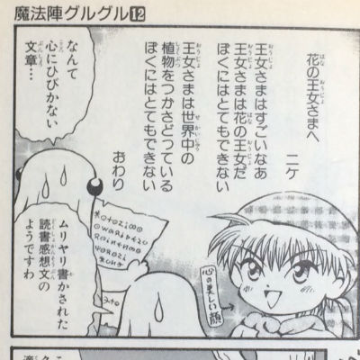
魔法陣グルグル12巻より。
書きたいことがブレてるからだ！クソが！！...グサ。だって人に見せる日記なんて書いたことなかったしさ。他の人のブログも全く見たことなかったから。何書こうか、何書いたらいいのか、何書きたいのか...足踏みしてしまうんよ。
そういえば、大学ノートに日記書きだした頃も何書いたらいいかわかんなかったな。はじめは1日の行動記録帳になってた。
～～～～～～～～～～～～～～～～～～～～～～～～～～～～～～～～～～～
7月1日（土）朝9時起床。午前中、髪のカットに行く。美容師さんにワックスつけてもらった。かっくいー！つけかたも教えてもらった！昼は家でそうめん。午後、昼寝2時間ほどして、読書。『フラニーとズーイ』。初めての作家さん読む時は世界観に入ってくの苦労する―！19時半頃、夕食。今日は出前のお寿司だったー♡ トロがやっぱりおいしー！アナゴも良かった！ブラタモリ見た。埼玉・大宮だった今日は。あとはベッドの上に寝ころんで再び『フラニーとズーイ』。だが1、2時間寝てしまう。1時頃就寝。おやすみー。
～～～～～～～～～～～～～～～～～～～～～～～～～～～～～～～～～～～
こんな感じ 。謎にテンション高い。毎日書いてたらめんどくさくなってきて、隔日でその日あったこと書くのもな、となり、自分にとって何か記録しときたいことがある時に書くスタイルに。それは何か悩んでいることを書くことが多い。大学で同学年の人となじめないとか、飲み会でしゃべらないからあまり居たくないとか、彼女がいない自分について考えるとか、そういうの。そうやってつらつらと書いてきて、考え好きな自分ができあがったんでしょうね。ねぇロッテンマイヤーさん。あ、寝てる。早っ。明日朝からハイジに国語教えるんだもんな。
話、戻そう。ボクはブログタイトルはすごく大事だと思ってるんですよ。見に来てくれた人の心にグッサー刺さるやつ。印象の傷跡を残すやつがいい。それが見つかるまでは、諦めず何度でも変えてやる。「なんですって！？」 おぉ、ロッテンマイヤーさん。...寝言か。地獄耳かと思った。
タイトルを最初から変えないのも才能、逆にどんどん変えていっちゃうのも才能。そういうことにしておく。
深夜。ベッドでゴロゴロしながらノートに日記を書いている。
チュンチュン。
窓の外でスズメの鳴き声がする。すごく近い。網戸のすぐそばっぽい。カーテンをめくり、見ると、いる。逃げない。チュン。網戸を開けてみる。チュチュン。バサササ...ボクの頭の上に留まる。虫が入ってくるの嫌だから網戸を閉める。ガラララ。
...なんなんだこの状況。スズメの脚が髪の中に入って頭皮に少し触れている。チュン。バササ。スズメがベッドに降りる。ボクと相対する。目が合う。
（こんなに遅くに呼んで、聞いてほしい話って何？）
「うわっ、頭の中で自分の声が勝手に鳴る。...おまえか、今の」
（そうだよ。ボクの質問聞いてた？話って何？）
「えっ、あ、ごめん。何って、ボクの生き方って中途半端かなって考えてたんだけど、別におまえを呼んだつもりはなかったよ。」
（ひどいなそれ。こっちは話聞いてほしいって呼ばれたから来たのに。いいから話せよ）
「ごめん。うん、そうする」
するとスズメは羽ばたいて、ボクの肩に留まった。ボクは今ベッドの上であぐらをかいている。
「今ボクってさ、自分の生活費働いて稼ぎながら一人暮らししてて、余った時間でもの書いてるやん。それはボクが親にもの書きになりたいって告白する勇気がなくって、内緒でやるしかないからなんだ。もし実家で生活させてもらえるんなら、もっと書く時間増えるやん。早く結果出ると思う。でも全くそんな自分想像がつかない。いい年して働かずに何親のスネかじって家にこもって書きものしてるんだってなる。
逆に、
もの書くのすっぱりと諦めて、歯科技工の仕事に専念する勇気もない。朝から深夜までラボにいて、仕事するのって苦痛だよ。ずっと誰かと同じ部屋にいてさ、上下関係を意識して人と接しなあかんし。歯の形こだわって作るのは好きよ。でも1日中人のために歯作ってて何してんだ自分って思うし、もっと一人の時間が欲しいって思う。
ボクばっかしゃべってるけど、聞いてる？」
チュン。
「チュンて。聞いてるのね。ぶっちゃけ、今の状態はムリがなくて気に入ってるんだ。仕事は午後から出勤で、仕事終わって0時くらいから午前中までは一人になれるから。多分ラボの人も、缶ヶ江くん最近落ち着いてるな、前は深刻そうな顔で仕事してたり、先輩からのちょっかいに悩んで仕事どころじゃない時もあったのに、って思ってるよ。ただ少しずつしか書けないから、このまま続けてていいのかなーって、よく悩むんだよね」
（続けてていいのかなーって言うけど、メグルは本当はどうしたいの？親とか彼女とか、自分の大事な人がどうしてほしいと思ってるかは置いといて）
「え？置いといて？......そんなん、この状態を続けたいに決まってるやん。この今の状態が一番ストレスなくもの書けるんだ。一人暮らし生活に必要なお金は自分で稼げてるし、もの書く時間もある程度まとまって取れるから」
（なんだ。答え出てんじゃん）
「うん。でもいいのかなーってすぐ思ってしまう。同じことブログに何回も書いてるよ。ブログ見に来てくれた人は、またこの話かってなってるよ絶対」
（それはメグルが人一倍考えるクセがあるからでしょ。しかもメグルのブログをどう感じるかは見た人が決める。メグルが決めるんじゃない。そもそももの書きなりたいんなら他の仕事辞めて専念すべき、それが無理ならすっぱり諦めて今してる仕事に専念すべき、って誰が決めた？メグルじゃね？）
「うっ」
（0か1かみたいな考え方好きだよな。大学生の頃に教授から言われたよね。世の中には白黒つけられないグレーな問題がゴロゴロあるのよって。むしろグレーだらけよって）
「なぜ知ってる？いや、ちっちゃいことは気にしない、メグチコメグチコ。...そうか、ボクが自分で0か1かの選択肢しか用意しないで、自分を苦しめてたのか」
（そんで、今自分、0でも1でもないし。ちょうどいいと感じるとこ見つけてんじゃん。それじゃダメなの？）
「...いいの？むしろ」
（それはメグルが自分で決めることだ。こんな通りすがりのいちスズメが決められることじゃない。ボクが決められるのは自分の人生、スズメ生だけだ）
「そう、だよね。この状態にもってくるまで自分なりにがんばってきたんだよね。許されるなら気が済むまでこの状態でいたい」
（なんかおそるおそるだな。まあ、よかった。もっと長くなるかと思ってたよ。ラッキー。ボクは寝床に帰って寝るとするかな。網戸開けておくれ）
「あぁ、うん」
ボクはカーテンをめくり、網戸を開ける。ガラララ。
「ありがとう、来てくれて」
チュチュチュチュン。バササササ... スズメは夜の闇に消えていった。
ブログをはじめた当初、書評ブログにすると決めた。でもその当初から、書評以外の記事を書いている。心の底でははじめっからなんか違うなと感じていたのかもしれない。
ボクがブログをはじめるきっかけになった本、『アフィリエイトがまるごとわかる本2017』で、こう書いてあった。
～～～～～～～～～～～～～～～～～～～～～～～～～～～～～～～～～～～
とりあえず本を買って読めばネタになるのがポイントで、......ネタに困らない......話題の書籍や漫画を狙ってみよう......
～～～～～～～～～～～～～～～～～～～～～～～～～～～～～～～～～～～
なるほど！確かに本は本屋さんに溢れている。一生かけても読みきれない数の本が世の中には出てる。そして新しい本がどんどこ出てくる。まさに無限。ネタ無限。なるほど。話題の本・漫画の書評を記事にすれば、PV数稼ぎやすいかもしれない。そう思ってやってみたけどね、なんか違うね、ボクには。
何個か違うなと感じるポイントはあって、中でも強く感じるのが、オリジナルじゃないということ。誰かが創った作品について感想を述べるのだから当たり前か。それが「評」をするということだ。アフィリエイトというのは何かを紹介してお金をもらうシステムなのだから、それでいんじゃないか。いやっ、それでは書評家になってしまうではないか。「～評家」ってボク嫌いだ。誰かが0から創り上げたものに対してあーだこーだ言ってる、0から1を創り出したことのないザコキャラみたいなイメージを持っている。もうさ、「評」をした時点で、された人（作品創った人）に負けてるやん。毎日料理してごはん作ってくれるお母さんに対して、味の文句をよく言うけど、そう言う自分はインスタントラーメンくらいしか作れないお父さん、みたいな。料理というフィールドで、この場合お父さんは一分の隙もなく負けている。
批評、評論全否定的なことを書いている。批評、評論に拒絶反応を感じる。書評ブログコツコツ作るとするやん。そのうちファンがついてくるやん。そのファンはボクのブログの評論読んで、満足してしまう現象が起きないか。この人が書いてる書評は信頼できる、とか思われたりして。原作読まない。いやいやいや。原作こそおもしろいのに！オリジナルがボク一番好きなんです。『進撃の巨人」でもスピンオフ作品とかで描く人変わると読む気失せてしまう。
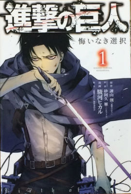
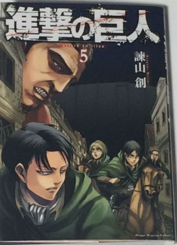
左：進撃の巨人 悔いなき選択1巻、 右：進撃の巨人5巻。 絵が違う。なんかリヴァイが違う。ボクはもう右のオリジナルリヴァイに慣れてしまっている。
だから書評の記事書いてると、なんかおもしろくない。そういう本がある、と人にお知らせすることができる良い点もあるが。その本がどうだったとか読んで、自分もそう感じるかどうかは読んでみないとわかんないし。なんで読者と作者の間に仲介者がいるんだろうか。
...ボクはアフィリエイトを否定してないか。...だってボクは読みたい本をブロガーさん経由で買ったことまだ1回しかないんだもん。ボクは本から読みたい本が見つかる。たまに身近な人（家族、彼女、職場の人など）から勧められて、見つかる。前者は、好きな作家さんが自分の本の中で気に入った本を紹介していて、その中にけっこうボクが読みたい本ある。そういうイミです。
まだブロガーという存在に慣れていないんだろうかボクは。しゃべったことも会ったこともない人を信用するって、難しい。今更ながらのテーマだ。いや待てよ。好きな作家さんにも会ったことない。しゃべったこともない。じゃなんで信用してるんだろう。...自分でお金出して本買ってるからかな。どこかの出版社から出てるってことは、一応世に出しうるモノだと認められたってことだから、その辺を信用しているのかなー。そう考えると、ブログって無料で誰でも読めるし、出版社的な目利きさんもいないし、アンダーグラウンドな世界だ。今思った。だから一般人のボクもこうやって人さまの目に触れる場所に簡単に自分の文章を載せられるわけだよね。
書評の話から、文章書いた人の信用の話になってしまった。要は、自分もお金のやりとりをする土俵で文章書きたいってことかな。
2日くらい記事を書かなかった。本を読んでいたからだ。それを読み終わったので今書いている。理想は毎日1記事を更新しつつ、読書も進めるというスタイル。文字通り素直に毎日書いて読んでできたらいいけど、どうやらできないみたいだ。同時進行で作業を進めるっていうの、苦手だ。1コずつしかできない。なんでなのか考えてみる。
以前、「ブログはがんばってやるもんじゃない」というタイトルの記事で、明日死ぬとしたら何がしたいか、と書いたことがあった。その時は彼女とセ○クスがしたい、そして中で果てたいと書いた。
じゃあ、死んだらどうしたい？
女に生まれ変わりたい。ボクはそう思いました。なんで？セ○クスをして、オーガズムを体験してみたいからです。Gスポットでイクとは一体どんな感じなのか。こればっかりは一生わからない。擬似体験はできるかもしれないけど、本来別の使い道のためにある穴で体験したところで、それは似たような感覚にとどまる。ホンモノじゃない。...ゴメンほんとはただ怖くてしたくないだけ。
感覚ってやつは、その生き物、その人にしか感じられないものだ。ボクは女性側のセ○クスを体験できないどころか、スズメとかカラスみたいに自分の翼で飛ぶ体験もできないし、ポケモンのカイリキ―みたいに腕が4本ある感覚も体験できない。
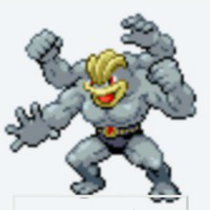
ポケモンフュージョンのサイトよりスクリーンショット。カイリキ―
人は腕が2本あって、指が10本生えてるよね。左手の親指から順に人差し指、中指と折り畳んで小指までやって、次に右手の親指からまた順に小指まで折り畳むとか、できる。小指から折り畳もうとすると薬指も一緒に折り畳まれて、全く自在というわけではないけれど。それは何故できるかって、皮の中に骨があって、骨の間に筋肉という動力源があり、両者は腱というつなぎ材でつながっていて、筋肉には脳からの電気信号で動くように神経が張り巡らされているからだ。
カイリキ― もおそらく皮の中は骨、筋肉、腱、神経があって、頭の中には脳があるはずだから、4本の腕は自在に動くはずだ。例えばさっきの指を1本ずつ折り畳んでいく動作も、右の上、右の下、左の上、左の下とか1本の腕ずつ順番にできたりするはずだ。上の腕2本でエッチな本を読みながら、下の左腕は股間をまさぐり、下の右腕はティッシュで受ける体勢をとる、そんな芸当も難なく可能だろう。
腕が2本より多くあるってどんな感じなんだろうと前々から疑問に思っていたので、書けて良かった。
それで？ボクは女じゃないからって、カイリキ―みたいに腕が4本ないからって、女に、カイリキ―に未練はない？あるっ！せめて近づくだけでも、近づけられる所だけでも近づきたい。おしりの穴を使うのはやっぱりコワイから置いといて、ほら、話し方とか変えられるじゃん。ここはブログだぞ？男っぽく書こうが女っぽく書こうが、自由じゃないか！紀貫之を見習え！せめてブログの中だけでも女になったらいいじゃないか。要するにオネエになるということね。
大丈夫、ブログならノーリスクよ。オネエの感じもなんとなくつかめてるわ。マツコデラックスとか、クレヨンしんちゃんの昔の映画によく出てくるオカマキャラ（ワタシはヘンダーランドのマカオとジョマが好きよ）、FM802 ロックキッズ802で出てくるマダムオチコとか。
どうもぉ～こんばんわぁ。缶ヶ江メグ子でぇす。アタシ何でもまず頭で考えちゃうから、かんがえメグ子って名前なの。わかりやすいでしょぉ、よろしくネ。ちんちんついてるけど、心は女よ、ちゃんと心の中にま○こはあるから。いやぁね、何恥ずかしいこと言わせるのよ。今回のこの記事読んでくれてありがとお～。またネ。
僕は大学3年で留年した時、そうだった。結局大学は 休学→退学 という道をたどり、自分の居場所じゃなかったなと感じる。そのへんの話をします。
目次
僕は大学で作業療法士というリハビリの専門士になるコースに所属していた。4年制。2年生までは座学ばっかりで、それは問題なかった。先生の話聞いて、板書をノートに書いて、ペーパーテストを受ける。それは割と得意だから、ちょこちょこ実習もあったけど、1日病院のリハビリ室に滞在するだけとか、課題をさほど要求されないのばかりで、クリアできてた。
しかし3年生になると、実習の割合が増えた。身体の一部がマヒしてる人への身体可動域（身体がどのくらい動かせるのか）検査とか、精神科での患者さんとの模擬面接とか、そういうの。同じ学年の人同士で練習して、試験は先生が患者役。
3つのタイプに分かれるよね。
①何をすればいいかだいたいわかっており、難なく合格する人
②どうすればいいかイマイチわからないけど、できる人に聞いたり練習相手になってもらったりしてやることがわかり、合格する人
③不合格の人
僕は3番目の人。どうすればいいかわからない。同じ学年の人に聞けない。練習相手なんて頼めない。それでも面倒見のいい人とか、先輩でよく気にかけてくれる人に「練習しよう」って誘ってもらって練習できた。でも試験は不合格だった。先生によると、僕は惜しいとかそういうレベルではないっぽい。このまま臨床に出すには問題アリ、的な。確かに僕も試験受けてて手ごたえを感じなかった。一人異国の地にいて、生活の仕方が全くわからないような、そんな感じ。
それで、留年して一年後再チャレンジすることに決めた。同じ学年で留年したのは僕だけだった。
留年すれば当然1コ下の学年の人たちと一緒に授業を受けたり実習をすることになる。座学はなんとか大丈夫だった。途中でグループワークが入ったりするんだけど、同じ班に社会人入試で入ってこられた方がいて、進行役、まとめ役をしてくださり、グループでワークできました。座学はグループワーク入ろうが基本個人プレー種目なので、いける。話を聞いて、板書メモしてのおなじみパターンだから。
問題は実習だ。顔なじみの同じ学年の人とでもやりづらいと感じるのに、ほとんど交流したことのない1コ下の学年の人たちとどうしてできるか。いや、できない。忘れもしない体表解剖学実習。それは、体表から触れる骨や筋肉を、実際に他人の体を触りながら学ぶという実習なのだ。
2年生の時に顔なじみの同じ学年の人と実習した時も、とても狼狽した。うろたえた。同年代の他人の体に触れなければならない。しかも僕が所属する作業療法 のコースって、3/4は女子なんだ。いくら実習とはいえ、同年代の女子の体に触れなければならないとか、抵抗がありすぎる。なので触っても、全然目的の筋肉の触知ができない。別に男子でも一緒だ。触るのでいっぱいいっぱいなのだ。触りながら目的のものを突き止める、そんな余裕がない。
留年した時の話に戻ろう。体表解剖学実習の前の休み時間。実習室には1コ下の学年の人たちが集まってきていた。その中に話できる人もいた。社会人入試で入ってこられた方で、おとなしめな男性2人。でもその時、その2人は何かを話し合っており、そこに割って入る勇気が出なかった。他はみんな話したことない人。ダメだ、実習室に入れない。居場所がない。
うちの父のことだ。前の前のラボの社長のことだ。50代以上の男性、仕事人間に多い。このコトバを発する時、彼らはこちらより上の位置にいる。仕事の技術、経験というフィールド、彼らの独壇場で。
そして、甘えている。えっ甘えているの？そう、甘えている。
相手が何かわからないことがあるのなら、わかるまで、わかるように教えればいい。自分にできる教え方を全て試しても相手にわかってもらえない、そんな時もある。それだけのことだ。
なのに、そこで「そんなこともわからないの？」がなぜ出てくる。「それくらいわかるだろう？」いや、今わからなかったからあなたにそう伝えただけなのだが。わたしにはそれくらいわかってほしい、そういう期待か？期待か。好意を持ってもらえてるのは受け止めておこう。
しかし、さっさと教えてくれよ。それともあんたは人に教えることができないのか？じゃあそう言って誰か他の教えれる人よこせよ。「そんなこともわからないの？」はこちらに恥の意識を持たせているだけじゃないか。普段「効率」とか「時間のムダ」とか言ってるあんたが、今明らかに非効率な時間のムダ使いをしてる。
こいつにわかるように教えられなかったら、自分の威厳が保てなくなる。それは避けたい。だからこのコトバで逃げよう。僕にはそう見えてしまう。向こうも恥をめっちゃ意識してる。
もしくは、こいつはオレよりもはるか下の人間なのに、当り前のようなことを聞いてくるな、オレが相手する問題じゃない。そう思ってるんだろうか。
くだらん。恥とか、威厳とか、オレはオマエより上だとか、そういうの捨てちまえばいいのに。
「わからない」に対してとる返事は2つだ。
「じゃあ教えよう」 か 「自分もわからない。他の人に聞いてくれ」。そんなこともわからないの？
このブログ、このまま続けててもらちが開かない気がする。
RPGで例えるなら、剣術も武術も魔法もちょっとずつ覚えているキャラのような。中途半端だから、いざ戦闘に出しても強みがなくて役に立たない。結局いつも馬車にいるやつ。
剣士は剣術しか使えないけど、だから強いんだ。戦闘で役に立つんだ。武闘家も魔法使いも一緒だ。
取り扱いたいテーマが複数あるので、テーマごとにブログを作る。
この雑記ブログもやめる。やるならテーマをはっきり決めて再構築する。
前回の記事で「雑記ブログやめた！」と書いて、テーマを絞ってブログリニューアルするつもりだったのだが...絞れなかった。
せっかく60記事くらい書いてきてるし、ブログを削除するのももったいなくてできなかった。
進撃の巨人ブログを新たに作ってコツコツ書いてたのだけれども、そればっかりしていて飽きてきてしまった。
たまには他のことも書きたい。はっそうだ。この雑記ブログに書けばいいじゃないか！じゃあちょっと改良してこのブログは残して、ちょいちょい更新していこう。
そういうことにしました。読んで頂いてありがとうございます。
「進撃の巨人」好きな人、マンガ、アニメを見始めた人が知りたい情報とか、面白いシーンの紹介とかをするブログ、
缶ヶ江メグルは進撃の巨人が好き ～壁の向こう側へ行く～
これからコンテンツ増やしていきます。
悪口を、書く。
なぜブログに書くのか？
一番いいのは、その先輩に面と向かって「自分でやれよ」と言うことなのだが、別に雑用の仕事もらうのが腹立つわけじゃない。雑用くらい、いくらでもやるよ。
二番目にいいのは、その先輩より上の先輩にグチることなのだが、そうするとどうしても「雑用やりたくない」という風に取られてしまうので、いやだ。
三番目にいいのは、腹が立ったことを思うままに日記に書き散らすことなのだが、怒りを自分の中にしまっておいて誰にも見せない所が物足りない。
ブログに書くと、誰かが読んでくれる可能性がある。別に実際誰にも読まれなくたって構わない。ただ、「可能性」があるだけで十分だ。それが救いだ。
そう考えたので今から書く。
今日、その先輩（バカ、と名づけよう）が僕に言ってきた。ある機械で使う材料の補充を、今度からやっといてくれないかと。材料減ってきたら、倉庫にあるゴミ袋大（45Lくらい）の材料があるとこまでプラ容器を持って行って補充する。1、2分で終わる作業だ。
バカは僕が補充作業をしているとこについてきて、こんなことを言う。
「なぜかオレが、補充しといて～って（先輩から）言われるからな」
...は？
つまり どういうことだ。なんでオレがこんな雑用をやらされなければならないのかってことか。そういうのはオレより下っ端のお前がやるべきなのに。そういうことか。
自分、何様なん。1、2分で終わる作業なのに。何会社での自分の立ち位置気にしてんの、バカのクセに。
話飛ぶけどさ、僕は人生の目標が 幸せになること なんだ。だから人の悪口なんて言うもんじゃないんだけど、ちょっと今回は我慢できん。でさ、先輩から言いつけられた雑用を後輩にやらせようとかしてたらさ、幸せにはなれないんじゃない？僕ならその選択肢は取らないな。だって雑用押し付けられた後輩は嫌な気分になるから。自分が幸せになろうと思ったら、自分の周りにいる人を笑顔にする必要があるから。
別にみんながみんな幸せになろうと努力しなければいけないなんてことは全くない。めんどくさいことはなるべくやりたくないから、誰かにやってもらいたい。普通だよ。頼みやすいのは後輩、これも普通だよ。
...ふざけんなよ。材料の補充くらい自分でやれよ。お前が先輩からもらった仕事だろうが。カス。いつもいつも隣でどうでもいいことしゃべりかけてきやがって、作業の邪魔だし。ライター無くなったからって、今週ずっと僕に「ライター貸して」って言ってるだろ。はよ買え、バカ。いつまで借りるつもりか。話しかけてくるとき顔近づけてくるの気持ち悪いねん。ラボの人はお前ゲイじゃないかってずっと前から噂してんぞ。あと仕事中寝んな。スマホいじんな。消えてくれ。お前僕より年下よな？よくタメ口で僕としゃべれるよな、先輩面して。頭おかしんとちゃう？死ねよ。
...はぁ。こんなこと書いても虚しい。雑用押し付けられて腹が立って、それを何らかの形でスッキリさせたって、それでなんになるんだ。
あのバカに雑用を押し付けさせた「年功序列」の考え方、こいつは心底くだらないと思う。
「自分はこの会社で下から（上から）何番目の勤続年数だから、この雑用を自分がやるのは不相応だ」こういう考え方僕は大嫌いだ。えっらそうに。貴様給料日が近づいてくるといつも「仕事増えたのに給料変わってないのイラッとするわ」って僕にグチるよな。僕じゃなくて社長に言えよな。そんな勇気ないよな、年功序列教信者だから。この社畜がっ！！上にはへこへこしやがって。
雑用は気付いた人がやればいいのに。そこで気付かないフリして（いや別に気付いてても）いっつもやらない奴大嫌いだ。
昨日投稿した記事のPVはやはり
夜が明けた今も0のまま
あぁ投稿しなきゃ良かったな
悔いだけが募ります
ブログをもっとたくさん見てほしいけど
広告収入もいつか欲しいけど
私の記事なんて見る人いますか？
そう思うと書けなくて
「どうしてはじめたの？」 「ブログじゃなきゃダメなの？」
続ける元気を無くしそだわ
一日ずっとおうちに居て、会社には行きたくないです
厚かましい願いではありますが おうちで働いて生きたいのです
好きなことをするやり方なんて
決まってないし学校でも習わない
「あなたはこう」だと決めてもらう方が
ラクなのは知ってます
「どんなことが好き？」 「嫌いなことは？」
いつの間にかわからなくなってく
生活してゆくだけでもう 他に手が回らないよ
決して多い時間じゃなくていいから 毎日ブログを書きたいのです
家事 仕事 おフロと晩ごはん あぁ今日も終わってしまう
この心臓が止まる前に おうちで仕事をしたいです
厚かましい願いではありますが 会社はもういいです
仕事も遊びもただただ消費するだけじゃつまらない
決して派手な収入じゃなくていいから おうちで働いて生きたいのです
FM802月曜、火曜の19時～21時の番組BEAT EXPO のDJ、T.T.こと竹内琢也さんのインタビューが好きだ。彼の質問は自分のよく考えることと似ている気がする。
さて、2017年11月6日（月）のゲストは ちゃんみな さんで、T.T.さんとのトークがよかった。ちゃんみなさんの、あけすけにもの言う感じは好感を持ちます。後から何度でも見れるように記録しておこうと思った次第であります。
目次
シーン① The Chainsmokers（ザ・チェインスモーカーズ）の単純な音の組み合わせがイカすという話
シーン② 海外のポップスの音楽の流行るサイクルが早いという話
20時過ぎたら「お疲れ様コーヒー」のコーナーがはじまる。毎回1名にスタバのコーヒーが1杯当たる。で、ゲストがいたらその人にタイトルコールをしてもらう。ちゃんみなさんのタイトルコールがエロい感じだったとこからのトーク。
～～～～～～～～～～～～～～～～～～～～～～～～～～～～～～～～～～～
T エロいすね、ちょっと
ち ほんとですか笑
T はい。お疲れ様―とか...なんかちょっと。。。ちょっとだけコワいイメージとかってあったりするじゃないすか、他の人から見て
ち あたしですか？あーけっこう...まー...言われますよ
T 言われるでしょ。なんかお疲れ様ってあんまり言わなさそうな...
ち 全っ然言いますよ。お疲れ様でーす とか言いますよ
T あ、そうですか？
ち 不良ほど挨拶できますからね
T ははは笑 なるほど。勉強になります
～～～～～～～～～～～～～～～～～～～～～～～～～～～～～～～～～～～
なんかすごく説得力ある。自分の職場の人たちを思い出してみると、まじめ―な人で挨拶を軽んじてる人いるなー。逆にふまじめでワガママでマイウェイなんだけど、挨拶はだいたいいつもきちっとするなーって人いる。そういう意味では不良になりたい。
ポップスの音楽が、いわゆる音楽の玄人達からなんとなく下に見られてる状況が今もあって、それは何なんでしょうね？とT.T.さんが訊いているところ。
～～～～～～～～～～～～～～～～～～～～～～～～～～～～～～～～～～～
ち いや、なんでなのかはホントにわかんないんですけど、でもワタシはホント全部の音楽にリスペクトしてるんですよ
T はい
ち ホントにクラシックとかも聴きますし、うわスゲーって思いますけど...
T うん
ち 多分その、好き嫌いはあると思うんですけど...やっぱり...否定はよくないですよね
T うんうんうん
ち 実際的にポップスが一番売れてるから、やっぱり大衆が好きなのはもちろん...そうだと思うんですけどねー。それがなんか、変わってるって思われたい人って結構いるじゃないすか
T はいはいはいはい、確かにそうっすね！
ち そういう人が言いがちなんだと思いますよ
T うんうんうんうん
ち ホントにそういうコアな人はだいたいポップスも好きだったりしますからね
～～～～～～～～～～～～～～～～～～～～～～～～～～～～～～～～～～～
この話もうなずける。音楽に限らないけど、「あんなものは邪道だ！」とか言って、やったこともないのに否定する人。いい感じしないよねー。「あれはやってみたけれども、どうしても好きになれないんだ」ならわかる。自分もそうでありたい。いや、そうあろう。
今日も記事書けてない。本も読めてない。これではいつ夢が実現するのか...。とか考えてしまう。
あれができてない、これができてない。あと1時間早く起きたらこれができた、あと1時間寝るの遅くしたらあれができた...。うっさいわ。
「なされるべきはずのこと」なんて存在しないよな。なされるべきはずと自分で勝手に思ってるだけで。存在するのは今何かしている自分だけなわけで。
ほんの少しでも進んだ分、それは自分を褒めてやらねば。普段の仕事でも同じだよな。今日も出勤時間なったらラボに行く、それだけでまず立派じゃんか。模型作り（職場での今の自分の仕事）も、毎日やってけるのがけっこうすごいことだと思う。生活してゆけてるだけで合格点だ。
小さな習慣とか、笑顔・天国言葉・人に威張らない人にやさしく（by 斉藤ひとりさん）とか、怒らないとか、他人にやる前に自分にやれてんのかって。やれてないじゃん。相変わらずできもしない大きな目標掲げて、できてないからって自分責め立てて。そんなこともできないのかって。
できねぇし。仕事したら疲れるし。眠いし。なのに仕事帰ってきてから1記事書いて寝る、とかそれ誰なん。僕ちゃうし。
できないことを「いややれるはずだ」とか「今日もダメだったのか」とか言われるのすっげ嫌だ。そういう、自分の一番嫌いなタイプの上司は今居る環境で自分の上に来ないようにしたつもりだった。
でも違った。自分の中にいた。近すぎて居るの気付かなかった。
今週はなんか元気ないなとずっと思っていたんだが、自分のせいだったとは。食欲もいつもより減退してたし。
自己啓発とか目的志向って毒だな。いや盲信して突き進む自分が毒なのか。理想高すぎ。現実の自分見えてない。自分にこそ、他人と接するように笑顔でやさしくしないとやってけない。
この人、やさしいなと感じる時、やさしい行動を取った人の中にはどんな意図、感情があるのか。そのやさしい行動の素（もと）となる因数（要素？）を1つ1つに分解する試みをする。
前提は「自分のため」。これです。他人のためじゃないです。やさしくするのは他人だけど、その結果自分にいいことが起こるのを期待している。もしくは自分に悪いことが起こらないようにしている。人は誰しも自分のためになることしかしない、僕はそう信じている。
では、やさしくするとどんないいことがあるのか。他人から攻撃される可能性を減らせる。これです。やさしい人はビビりだ。攻撃されたら、物理的でも精神的でも、傷つく。それが嫌だから先手を打つ。 「攻撃しないでくださーい。ボク、あなたに敵意ありませんので―」というアピールをしなければならない。それがやさしさという形で現れる。
誰に言われずともゴミ捨てとかの雑用を率先してやる、話しかけられたら何か一回は必ず返しのしゃべりをする（無視しない、テキトーに流さない）、滅多に怒らない、ドア閉める時とか物を机に置く時とかに大きな物音を立てない、同期や後輩に対してもです、ます調で話す、からかわれたら冗談としか受け取らない（笑い飛ばす）、でも本当に我慢ならない からかい や 扱い を受けた時はブチ切れる...。
自分が今思いつくのはこのくらいだ。このくらいしたら、周りの人はあなたをやさしい人だと見るようになる。
...もっと素因数はあるはずだが、今僕にわかるのはここまでだ。
やさしい人＝利己心 × ビビリ
これは職場での、僕と仲の良い後輩くんとの間でやり取りされるやつ。今日ふと妻と遠慮のし合いが起こって、試しにこのやり取りを使ってみたらウケたのでメモしとこうと思った。
職場には大きな流し場（台所のシンクみたいな、水使うスペース）が1コしかない。たまに、2人同時に流しを使おうとしてどちらかが譲る、という時がある。僕は持ち前のやさしさを発揮し、後輩くんに「あ、先どうぞ」と譲る。しかし後輩くんも負けじと譲る。「いえいえお先にどうぞ」。僕もまだ粘る。「いやいいよ」。
そこですかさず後輩くんが「いいから使えー！」と急にキレ出す。
僕はおかしくて笑いながら、「あ、じゃあ。どうも」と言って流しを使いはじめる。
...どうすか？妻とのやりとりも参考になるので書いとく。
新しく大きなゴミ箱を買ってきた。今までは僕が一人暮らししてた時に使ってたゴミ箱だったが、2人が生活するには容量が小さくてすぐパンパンになる。ゴミの日までもたないのだ。
で、新しく買ってきた大きなゴミ箱を、クロゼットの前に置くことに決めた。そのクロゼットは滅多に開けることがないから、扉開かなくてもいいかとなった。
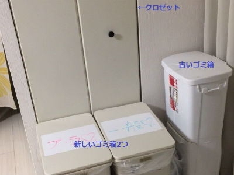
しかし、僕はそのクロゼットの中に毎日飲む缶ビールを置いていて、毎日そこから取り出していた。缶ビールをどこか別の場所に置かなければならない。
僕は冷蔵庫の上に置こうとした。そしたら妻が
「ああ、ココなんでも置き場になってるね」と言って、置いてあったキッチンペーパーや水筒などを別の場所に移した。
僕 「いや、いいよそれそのまま冷蔵庫の上置いといても」
妻 「あ でもここでも大丈夫だし...」
僕 「いやいや、その...いいから置け―！ここに置け！！」
妻 「笑」
ということで、今まで置いてあったものも、ビールも冷蔵庫の上に置くことになりました。
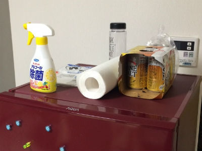
みなさんもこのやり取り、よかったら使ってね。
マジギレしちゃダメだよ。キレてる風に言うだけでいいよ。
また記事書けてない...。本も読み進められてない...。運動も土日できてなかったな...。
またこれかよ。何か考え方おかしくないか僕？考え方というか、自分の能力限界...稼働容量限界、の設定おかしくないか？
まるで洗濯機に蓋が閉まらないくらい洗濯物を詰め込んで、「この洗濯機また動かないんだけど。てか蓋がまず閉まらないんだけど！ポンコツか！！」って言ってるようなもんだよな。...狂気だな。でも全然気付けない。ただ元気だけ失くしてゆく。
こんな記事書く元気あるんなら、書こうとしてる記事書く方にエネルギー費やせよ。ってまた生身の自分を無視した自分が攻撃してくるよ。いや、記事書く気起こんねんだよ。本読む気も（本はまだ記事に比べたら、読む気出そうな気するけど）。
...てことは、心からどうしても書きたい、書かないと気持ち悪くておかしくなりそう、というヤツじゃないんだよ。今「書けてないなぁ...」で止まってる記事は。誰に対して体裁を保とうと考えてるのか謎だが、ブログっぽい内容の記事にしようとしているんだ僕は。いい子ちゃんでいようとしているんだ。その方が読まれるだろうし、アクセス伸びるよきっと、みたいに考えて。本にも書いてあったしとか考えて...
僕にとって世間の情報収集源はラジオで、12月から3月にかけて、受験生応援とか受験生ガンバレとか、受験生リスナーと電話つながっていますとか、受験生色が強くなる。高校受験、大学受験やね。
自分も高校受験・大学受験を経験した。当時は、勉強して模試で合格安全圏目指して、勉強して、勉強・勉強...！それしか考えてなかった。親もそれ望んでたし、学校の友達もみんな高校・大学目指してたし。
でも今振り返ってみると、ヘンなのって思うよ。中学卒業して15才くらいで、体も心もいっろんなことをぐんぐん吸収できる時期だと思うのに、働かずに学校という檻の中で机について座学ばっかしてるなんて。で学校終わったら部活とか遊びとか好きなことして、こんな自由な時間があるのは学生の間だけだぞって。
学生の時にそれ言われても、ピンと来ない。今僕は社会人3年目だが、ものすごくピンとくる。食べるために働いていると、自分の好きにできる時間が少ない。切実に時間欲しい。僕はこうやって書くことが好きだから、書く時間がもっと欲しい。ゲームなんてしなくていい。部活もしたくない。遊び友達もいらん。書いたり、読みたい本を読む時間をくれって思う。ブログ作ったり、kindleで自分の本出版して、どんどん自分の好きな書くことで食べてけるようになりたい。いや、なる。
こんな真剣に考えないよ学生の時って。やらなきゃいけない勉強を怒られない程度にサボりながらやるだけだろ。そう、学生は勉強さえしっかりやってれば文句言われないよね。働いてなくても何も言われない。...これ、すごいことだと思う。学生くん、君の住まいは、ごはんは、着る服は、おこづかいは、誰が出してくれてるのだ。その人から生活費を出してもらうために、若者が使える切り札的カード、「勉強」。何の役に立つのかよくわからないことを、先生と名乗るエラそうな奴から座学で教えてもらう。40人くらいの集団で1つの部屋に閉じ込められて。...働かないためにはそれくらいの義務を果たす必要がある。しかしそれさえ果たせば、衣住食に不自由せず、割と時間の自由も保障される。
中学卒業しちゃうけど、まだ働きたくない。そうだ、高校に行こう。...高校卒業しちゃうけど、まだ働きたくない。そうだ、大学行こう。大学卒業しちゃうけど、まだ働きたくない。そうだ、研究者の道を目指そう。そしたら働かなくて済む......。
ということで、研究者とは "働きたくない" 思いが結晶化した生命体だと思うのだが。勉強の仕方なんて自分で見つけるしかない。僕は勉強好きだ。勉強すれば、今より働かなくてもよくなるかもしれないから。中卒で一度社会人3年くらいやって、自分の好きなこと やりたいことは何か、時間が無い中真剣に考えるのがいいんじゃないかって思う。
逆だよ。他人を大切にできてはじめて、自分を大切にできる。大切にっていうか、 やさしくとか大事にとかでもいいんだけど。なんでそう思うかっていうと、人に何かしてあげること（＝仕事）でお金をもらってはじめて食べてゆけるから。眠たくたって、本を読みたくたって、ゲームしたくたって旅行に行きたくたってセ○クスしたくたって...出勤時間・営業時間になったらスイッチ切り換えて働くでしょ？社会人って自分の時間なかなか取れないよね。いや社会人じゃなくても、学生でも未就学児でも、自分を食べさせてくれる人、お父さんとかお母さんの言うこときいたり学校行って勉強したりする、それは自分のためじゃなく他人のためだ。小学校入学する前に、「メグルくんは小学校行っとく？それともやめとく？」とか訊かれたか？そうじゃなかったら他者への奉仕活動＝仕事の1つだ。
はじめは自分じゃ何もできないから、人のいうこと聞いたり、、人のために雇われて働いたりして食べてゆかざるを得ない。お金欲しいなって思ったら、求人誌求人サイト見るよね。手っ取り早いよね。自分でブログ作って収益化するとか、自分の歯科技工所を開業するとかよりはるかに。自分を大切にするのに、エステ行くにも遊園地あそびに行くにもおいしい料理食べに行くにも、お金がいる。そのためには何か働かなきゃならない。自分がこうしたいああしたいとかは置いといて。
まずは他人にやさしくできてはじめて生かされるというか。だから、例えば「自分を大事にできてはじめて、他人を大事にできるんだぞ」とか自信満々に人生の先輩然としてのたまってくるやつがいるとするよね、こいつ大丈夫か？って疑った方がいいんじゃないかしら。だって、自分なんて生きてる価値ないわ―毎日が苦しいわ―とか悶々と自己否定しつつも、医者やってて「あの先生に診てもらったら病気治ったんだ、いい先生だよ」とか周りから良い評判立ってる人がいるとしたら、ねぇ。自分のことほったらかしでも他人にやさしくできるじゃんかー！ていうかそののたまってくる奴は自分を大事にすることばっか考えてて 他人にやさしくすることはほとんど考えてなかったりしてな。
自分のことなんて、無意識にでも考えてたりするはず、自分なんだから。そこでまず自分のこと最優先で動くと、なんかうまくいかないことが多い。あいつは自分のことばっか考えてる、ちゃんと仕事しない奴だ、とか周りから思われたりする。自分が食べてゆける程度に他人のことを大事にして、余った時間とエネルギーを自分のために使う、というのが凡人にできる幸せな生き方じゃないか。僕凡人。
なかなか時間とエネルギーが余らないのが困りごとなんだよね最近の。仕方ない、その時が来るまでじっと待つしかない。
先月、やっていたSNSを全てやめた。アカウントを削除した。Facebook も Twitter も Instagram も。LINEはやってるけど。これは別モノじゃない？メールに近い連絡ツール的な。頻繁に更新していたり、他の人のをよく見ていたり、なんでそんなことができるのか僕にはわからない。いや別にそれでいいんだけども。楽しかったら続けたらいいし、楽しくなかったらやめたらいいし。続けてる人に「いますぐやめろ！」とか言うつもりないし。ただ僕は楽しくなかったな。そこんとこを言語化しときたくなった。存在証明。
3つの中で一番やらなかったのが Instagram。写真て自分あんまし興味ないのかな。まだ Facebook、Twitter の方が文字情報多くて見てた気がする。しかしそれにしても、ドレスコードのようなものがあるのが合わなかったな。そのSNSに載せる写真や文章は うれしい楽しいハッピーな出来事 に限る的な。「仕事ばっかでしんどい」みたいなネガティブ表現も、「大変だね、がんばってー」と気軽にコメント返せるような内容に限る的な。
2、3回くらい Facebook で500～1000字くらいの、仕事きつい・なぜ生きているのか というテーマで投稿したことがある。知り合いに真剣に心配されて、「今度飲みに行こうか」とかメッセージもらっちゃったりして。ちゃうねん。話聞いてほしいとかじゃないねん。ブラック、ネガティブなテーマを表現できる場って僕にとっては文章なんよ。そしてそれは何か形にして外に出さないと、いつまでも自分の中でぐるぐると渦巻いて自分の元気を奪っていくんよ。説明になってるかな？伝わってる気しないないまいち。書くのに理由なんているの？書きたいんだから書かせてください。
で、書くんだけど（投稿したり つぶやいたりするんだけど）、「いいね」機能がとてもわずらわしい。もらうと嬉しいよね。誰がくれたか見るよね。...くれた人の投稿、つぶやきをザッと見て、自分がいいねと感じたやつに「いいね」ポチるよね。...お互いに「いいね」をし合う関係ができる。以降、自分が投稿・つぶやく度毎に「あの人また いいね してくれるかな」と気にすることになる。されたら嬉しい。されなかったら、ああこの投稿は特にピンと来なかったのかと思う。...わずらわしい。さらに、たまにはその人の投稿を見ようかなってなる。タイムラインをザーッと見て、いいね と感じた投稿に「いいね」ポチる。...わずらわしい。なんでこんなことをしなくちゃならないんだ。いやしなくていいやんそんなことってツッコミが来そうだが。
そういうわけにはいかないじゃないか！
何この、仮想現実なのにリアルな人づき合い感が混じってるの。ネットの中までわずらわしい人づき合い したくないんだが。そう、だから Facebook は意味わからん。実名 顔出し。なぜわざわざネットの中で？友達登録した人の投稿、勝手に僕のタイムラインに流してきやがって、見たくもないのに。見たい時はこっちから見にいくから！余計なことすんなよな！！
しかもアカウント削除する時に、「○○さん、□□さんが残念がると思います」とかいうメッセージが表示されよる。テメエは僕のなんなんだよ。フェイス・ブク男め。友達をダシに引き止めんな。汚い手使うな。
Twitter もだぞオマエ。1ヶ月くらいログインしてなかったら、フォローしてる人の最近のつぶやきですリストがメールで来る。1日に1回くらい？ツイッター「あなたがフォローしたんだから、当然知りたい、見たい情報ですよね？お知らせしますよっ！」 うるせー！しかもこんな人がいますよ。フォローしてみましょうリストまでメールしてきやがる。余計な余計なお世話である。
僕はこういうエッセイ、というか日記文章を書きたいわけで、SNSはそれにそぐわなかったということだね。おいしいごはん食べてきました！旅行行ってきました！日常のちょっとおかしな風景です！...そういう内容を投稿したり、他人の投稿見たりするのはそんなに楽しくない。学生時代の友人が最近何してるかとか知りたいか。僕は別に。何か用があったら連絡取るけども。自分が好きだったりリスペクトする人でも、今どんなことつぶやいてるかそんな気になるか。僕は別に。リアル以外で人とのつながりをそんな感じていたくないよ。リアルで十分だよ。いいね機能は気にしすぎて何も投稿する気無くなってくる。何も見る気無くなってくる。
SNSやめてそろそろ1ヶ月経つだろうか。特に困ったことはないです。書きたいことに集中しやすいです。書きたいと思った時に、それを阻止しようとする要因が1つ減ったという意味で。昨日の自分の投稿に いいね くれた○○さんのタイムライン見とこうかな、とかいうのが阻止してくるんですよ、書くのを。
やめてよかった。
日っていうか、1日の中に自分休業タイムを作らなければ。もちろん一週間の中に一日くらいは自分休業日を作らなければ。なんでかって、今日日曜日で会社休みだけど、やることは全然あるからな！休みなんかじゃ全っ然ないかんな！ゴールデンウィークの旅行の新幹線のチケットどの時間で、どの区間で取るかとか、予約した宿に浴衣の寝巻がないっぽいからアマゾンで頼むかとかな。旅行はとっても楽しみなのだが、最近忙しさに拍車がかかる仕事のせいで平日ちっとも書けてないし、休日の土日も実家に帰る用事があったり、そこで新たな仕事をもらったり（結婚報告ハガキ作りなさいよ）、その仕事をしてたりで、全然書けてないんだよ！おまえら一体どれだけ僕から時間を奪えば気が済むのだ。いい加減にしろよ。
土日休みっていうけど、そりゃただ "会社が休業日" というだけだし。仕事残ってる人はラボ（会社）出てきて毎週仕事してるし。家帰ったら家の仕事があるよ。...休みちゃうやん！！休みっていうのは、自分の好きなことしていい時間が仕事よりも多くある日のことだ、僕の中では。それはもの書いたり本読んだりする時間のことをいう、僕の中では。僕は仕事が全て片付いた後余った時間にそれをすることにしているのだが、なんとまあ短いことか。晩酌してるのがダメなのか？エッチな動画でオナニーしてるのがダメなのか？...そうかもしれない。
学生の頃は良かったなぁ...とも思わない。あの時はあの時で、ゲームしたり友達と遊んだり部活したりしなきゃならなかった。そう、しなきゃならなかった。 今、本当にそうしたかったか？と自問すると、そうでもなかったと感じるから。部活？何故学校のおつとめが終わった後も集まって何かしなきゃならんのだ。遊び？相手に気を遣うのがわずらわしい。グループで遊園地行くとか、遊びにならねえよ。仕事、つきあいの一種だよ。ゲーム？せっかく一人になれたと思ったら、「私と遊んでください！」だと？おもしろくて遊んじゃうじゃねぇか！あぁ時間経つの早。...でも最近はおもしろいと感じなくなってきた。一人画面に向かってボタンぽちぽち押すのが虚しい。
子どもの頃から、自分の好きなことする時間なんて持ってなかったんだよ。まず何が好きなのかがわかんないしね。周りの人がやってることマネしたり、娯楽と言われることをとりあえずやってみたりしてるだけで。そういうのは仕事と一緒だから。何者かからけしかけられてやっていることじゃないか。そういう、一切の仕事をお休みする時間、1日を作りたい。もっともの書きたい本読みたい。させろやくそおぉぉぉぉ...！
メタルクラウン、インレー（アンレー）の研磨作業がありえないくらい時間かかる。3時間。10～15コの、仕上げ研磨（ロビンソンブラシ、バフ）で3時間。説明しよう、研磨とは、ペン型のマイクロモーターに切削（せっさく）バーを取りつけ、目の粗いバーから順に目の細かいバーを使っていき歯の表面の傷を ツルツルになるまで小さくしていく作業のことだ。
先輩なら1時間か1時間半で終わるそうなのだが、なぜ僕は2倍もの時間かかるのだろうか。先輩は「わからなかったらなんでも聞いてくれていいから」と言ってくれる。でも、一体何をどう聞きたいのかわからない。インレー、クラウンの研磨は初めてさしてもらうんだけど、あれやね、初めて何かをしてもらう人に「わからなかったら何でも聞いて」と言うのはあまり意味がないね。教える人がこまめに見守って、おかしなやり方してたら教えてあげないといけないね。自分、教える立場でもあるので反省。
とりあえず、隣の席の先輩が教えてくれたやり方を試してみて、早くできたものを取り入れていこう。
前勤めてたラボで、仕事教えてもらってた先輩から言われた言葉が忘れられない。
「缶ヶ江くんは一から教えないとわからないんだね（1、2は教えずともなんとなくわかっていて、3、4、5くらいを教えたら、もう8、9、10までわかるとかじゃなく）。ま、教えるけどね」
普通はそうじゃないのかな。ないんだねぇ。当時この言葉を言われた時は死亡宣告を受けた気でいて、自分は見込みのないダメなやつだと思い込んでいた。先輩のコトバの最後の方の「教えるけどね」は僕の心に届いていなかった。
あの時から2年くらい経ったけど、一からおしえてもらわないとわからないのは変わってないな。あの時と変わったのは、それほど落ち込まなくなったことか。だって、昨日おとといと同じ3時間とかかかってても、ロビンソンブラシの当て方がわかってきたとか、咬合面の溝にブラシ当てる角度がわかってきたとか、小さな進歩はわかるんだもん。そゆとこに気付くゆとりを持てるようになったのは幸運だ。2年前なら「僕はやっぱりダメなんだ、やっぱり今勤めてるとこを辞めて他の仕事先を探そう」とか考えてた。
2年前は本当に転職を考えてて、土日に知り合いの転職アドバイザーの仕事してる人とかに相談していた。で、いざ具体的にどんな仕事内容の、どんな会社探します？となった時。ものづくり系がいいと答えた僕に提示される求人リスト...。旋盤工？えぇっヤだなぁ...
求人リストを見てみて、急に転職意欲がしぼんできた。知り合いにも「申し訳ないけどやっぱり転職活動は止めときます」と伝えた。この時、自分が頭で考えてる以上に歯科技工に愛着を感じていることに気付いた。
ものづくりは好きだけど、僕は人体と関係ないのは興味出ない。人体×ものづくり両方満たす歯科技工はなかなかめっけもんな仕事だ。今のラボに来て1年も経ってない頃に、仕事が毎日遅くまでやらないと終わらなくて土曜もラボ来てやってたりしてて、辞めたくなった時のこと思い出す。先輩に相談したら、「俺も一度技工士辞めてラーメン屋で働いてたことあるで」。そんで次に言った言葉が心に残っている。
「でも歯作れんのは歯科技工士だけやからな」
言われたその時は ハァ、そうですか とピンと来なかった。でも今なんとなくわかるような。社会人3年目の若者が、転職しなくてもいいやと思えるくらいの魅力はなんかある。歯科技工には。いや、ただ転職して仕事も人間関係も一からやり直すのが面倒臭いだけなのかもしれない。それでもいい。目の前のうまくいかない仕事から逃げ出したい気持ちよりも、逃げ出した先で一からはじめる面倒臭さの気持ちのが勝ったんだ。もうめんどいな、いいや今の職場、今の仕事で。諦めの境地。
だって、歯には一生お世話になるしね。歯無かったらどうやって食べんの。それを作ったら、まあ間違いなく人の役に立つよ。とってもわかりやすい。僕はわかりやすいのが好きだ。大学中退して歯科技工の道に進んでよかったなあ。